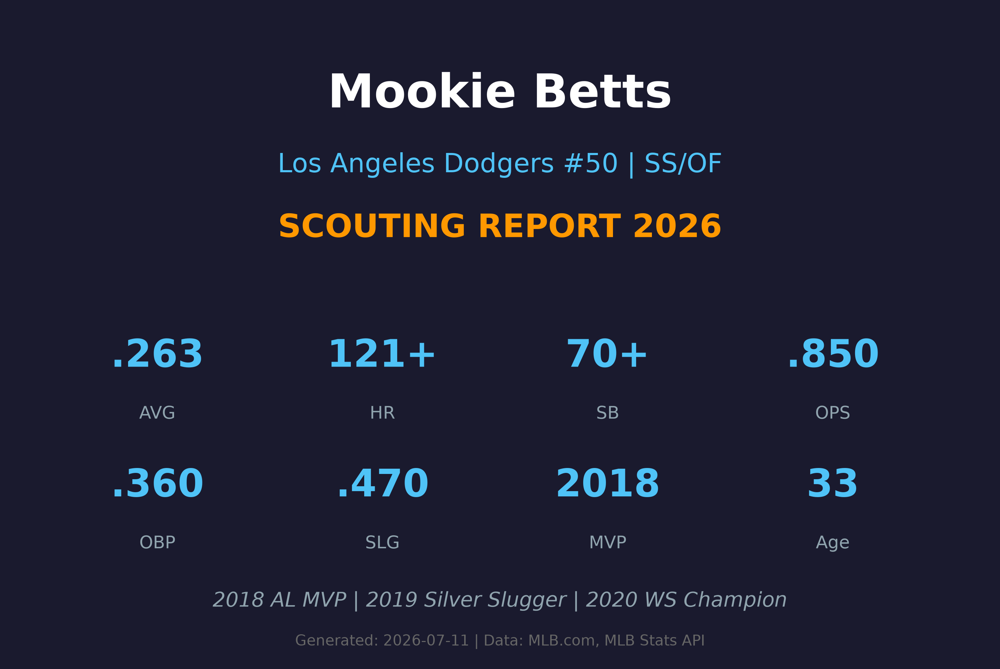
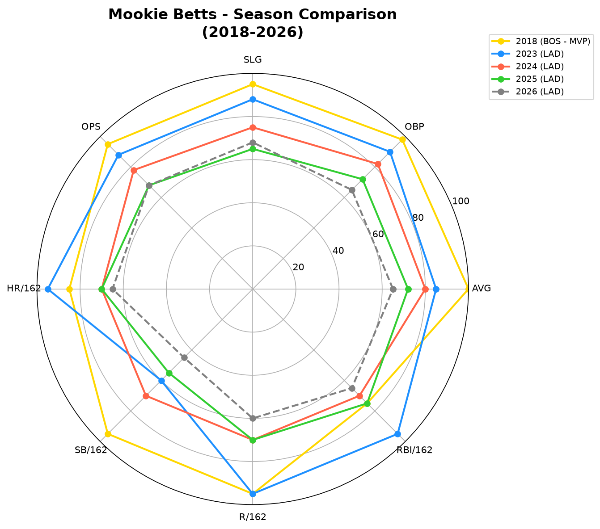
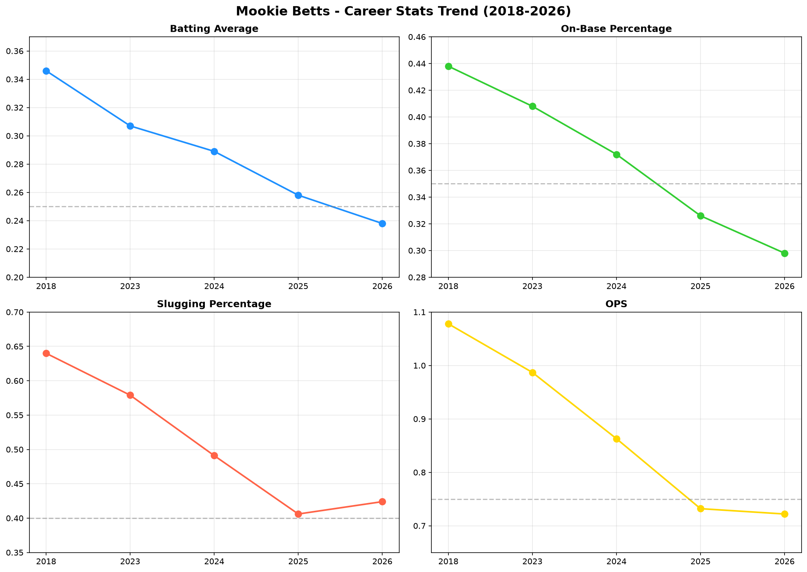
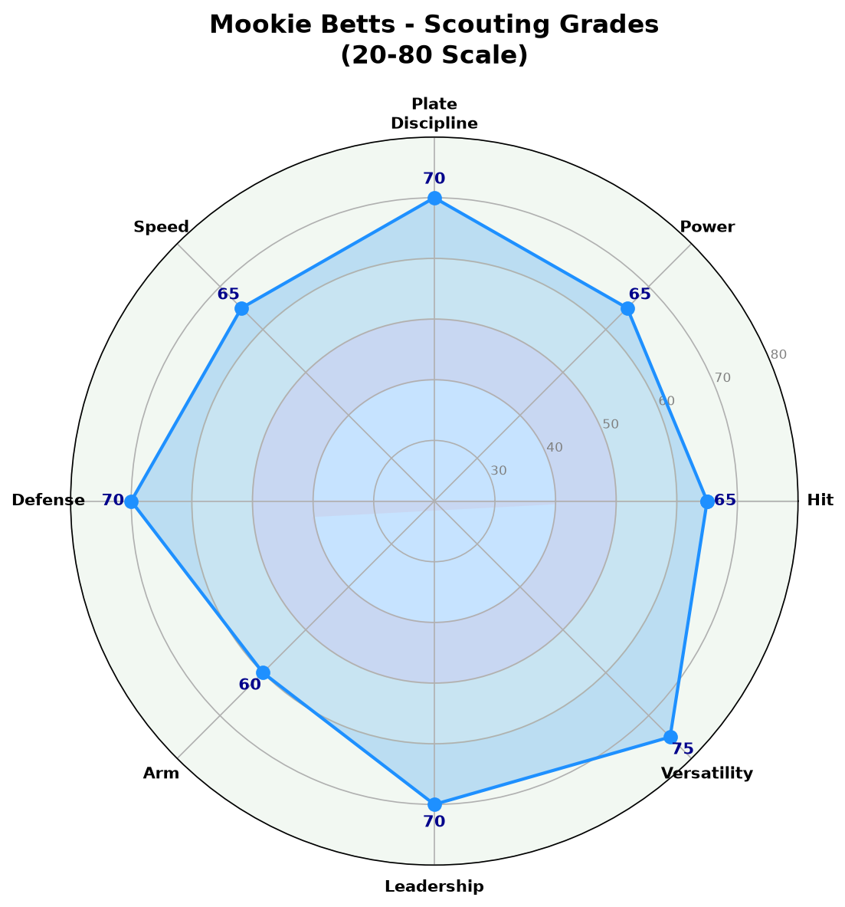

Los Angeles Dodgers #50 | 游击手/外野手 | 2018 AL MVP

Mookie Betts 是当今MLB最全面的球员之一，2018年美联MVP得主。他以精英级别的打击能力、出色的速度和顶级的防守闻名。
Betts职业生涯展现了罕见的攻守兼备能力：他可以在外野和游击手之间无缝切换，打击能力维持在联盟前5%水准。
2023年在道奇队，他再次展现了MVP级别的实力（.307/.408/.579，39轰），但2024-2026年数据呈现逐年下滑趋势。
.346 AVG | .438 OBP | .640 SLG | 32 HR | 80 RBI | 30 SB
历史级别的赛季，率领红袜夺得世界大赛冠军。打击三围是现代棒球史上最佳之一。
.295 AVG | .391 OBP | .524 SLG | 29 HR | 80 RBI | 16 SB
连续第二年展现攻守兼备的 elite level 表现。
加盟道奇首季即帮助球队夺冠，打击率.292，OPS .927。
.307 AVG | .408 OBP | .579 SLG | 39 HR | 107 RBI | 14 SB
生涯第二春，39轰创生涯新高，MVP票选第二名。
2024年 .289 → 2025年 .258 → 2026年 .238，打击率连续第三年下滑。需关注是否为年龄衰退或伤病影响。
| 赛季 | 球队 | G | AVG | OBP | SLG | OPS | HR | RBI | SB |
|---|---|---|---|---|---|---|---|---|---|
| 2018 🏆 | BOS | 136 | .346 | .438 | .640 | 1.078 | 32 | 80 | 30 |
| 2023 | LAD | 152 | .307 | .408 | .579 | .987 | 39 | 107 | 14 |
| 2024 | LAD | 116 | .289 | .372 | .491 | .863 | 19 | 75 | 16 |
| 2025 | LAD | 150 | .258 | .326 | .406 | .732 | 20 | 82 | 8 |
| 2026 ⚠️ | LAD | 58 | .238 | .298 | .424 | .722 | 11 | 30 | 1 |

2018(MVP) vs 2023 vs 2024 vs 2025 vs 2026 数据对比

2022-2026 AVG / OBP / SLG / OPS 趋势
Betts的选球能力一直是他的标志。2023年BB/PA高达13.8%，能够迫使投手进入有利count。即使2026年数据下滑，选球直觉仍然出色。
A 评分
巅峰期能够击出30+轰，2023年更达到39轰。力量分布全场。但2024-2026年力量呈现明显下滑。
A- 评分
巅峰期是联盟顶尖（.346 AVG in 2018）。挥棒紧凑，平飞球率高。但2024-2026年打击率从.289降至.238。
B+ 评分
巅峰期是出色的跑者（2018年30盗）。但随着年龄增长，盗垒数量逐年下降。跑垒判断仍然聪明。
B+ 评分
多次金手套得主，防守能力 elite level。无论外野还是内野，防守都是联盟顶尖。Range、判断和传球时机无可挑剔。
A 评分
从外野转守游击手，臂力足以应付内野传球需求。虽然不是联盟最强，但传球准确且有力。
B+ 评分
可在游击手、二垒手、右外野三个位置无缝切换，且每个位置的防守都达到平均以上。道奇教练团排兵布阵的极大灵活性来源。
A+ 评分
33岁资深球员，更衣室核心人物。职业态度和训练方式对年轻球员有积极影响。关键时刻的可靠领袖。
A 评分
Betts采用略微开放的打击姿势，挥棒路径短而直接，能够快速击中球。挥棒速度极快，能够应对高球速快速球。然而，最近几个赛季他的挥棒似乎变得更加被动，被三振率上升（2026年11.5%），保送率下降。
Betts的选球能力是他职业生涯的核心竞争力。即使在2026年数据下滑时，他仍然不会盲目追逐坏球。然而，他的选球似乎变得更加保守，导致更多好球被放过，这可能导致上垒率下降。
Betts的防守能力是他职业生涯中最稳定的资产。他获得了6次金手套奖，无论是外野还是内野防守都无可挑剔。比赛阅读能力出色，能够预判球的落点并做出正确的防守动作。
33岁的Betts正处于职业生涯的后期阶段。虽然数据仍然可观，但2018年MVP赛季和2023年巅峰赛季的表现可能已无法完全复制。身体可能已无法支撑全季的高强度比赛，这解释了为什么2024年（116场）和2026年（58场出赛率较低）的出场次数有所下降。
Betts的多功能性为道奇队带来了巨大的战术价值。他可以在不同位置之间切换，这使得道奇在伤病潮时能够灵活调整阵容。然而，频繁更换位置可能也影响了他的打击节奏。

综合评分雷达图 (20-80量表)
虽然数据下滑，但综合能力仍是联盟精英，尤其是多功能性和领导力
A 级 / 前MVP级别
Mookie Betts的道奇生涯已经相当成功，但2024-2026年的数据显示他可能正在经历职业生涯的衰退期。不过，即使数据下滑，他的多功能性、防守和领导力仍然使他成为极具价值的球员。
2026（下半季）：目标恢复至.250/.330/.420水准，全季约25轰
2027-2028：转型为「打点制造机」，OPS .750+，维持防守水准
2029+：可能转为全职二垒手或右外野，减少游击手出赛，延长职业生涯
Mookie Betts出生于田纳西州纳什维尔，原名Markus，「Mookie」是母亲给他取的昵称。他的父亲在保龄球方面也有天赋，Betts本人也是一名出色的保龄球手，曾参加过职业保龄球比赛。
2011年选秀大会，波士顿红袜队在第五轮选中Betts。他在红袜农场系统快速爬升，2014年登上大联盟。2018年是他职业生涯的巅峰——他以.346/.438/.640的打击三围、32轰、30盗垒获得美联MVP，并帮助红袜队夺得世界大赛冠军。
2020年，Betts被交易到洛杉矶道奇队，随后与道奇签下创纪录的12年3.65亿美元合约。他在2020年帮助道奇队夺得世界大赛冠军，并在2023年再次展现MVP级别的实力。
Betts以其职业态度和训练方式闻名。他是一位严格的素食主义者，注重身体保养。他的性格外向幽默，深受队友和媒体喜爱。
有趣的是，Betts是一位出色的保龄球手，曾在PBA（职业保龄球协会）赛事中参赛并打出300分满分。他还擅长打bowl和观看NBA，是洛杉矶湖人的忠实球迷。